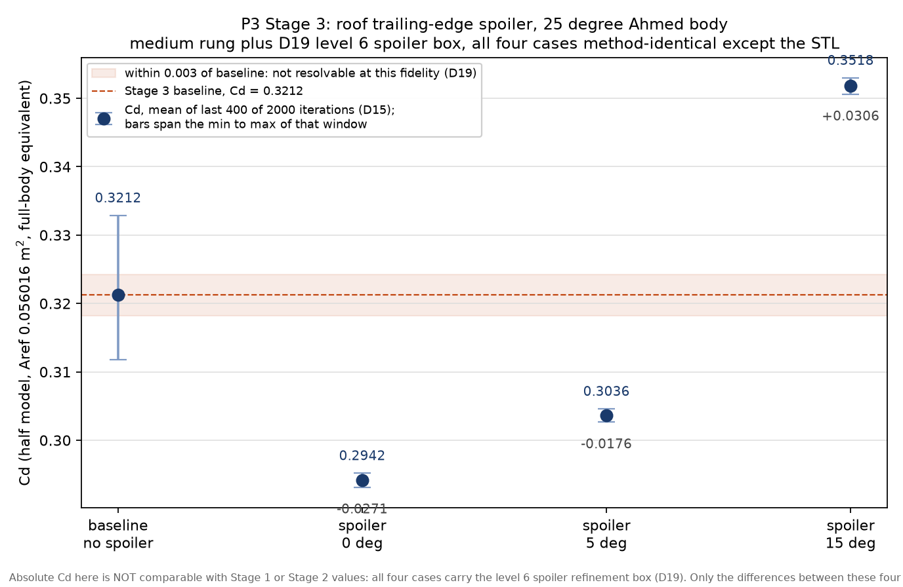
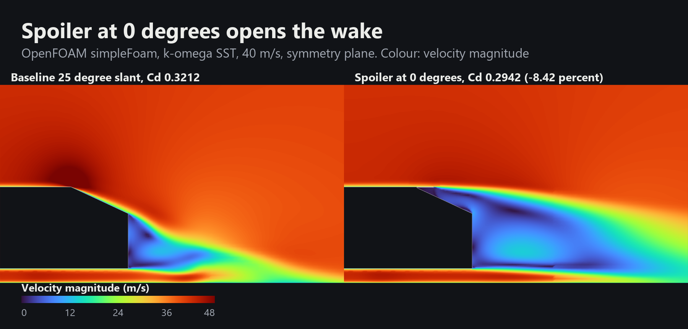
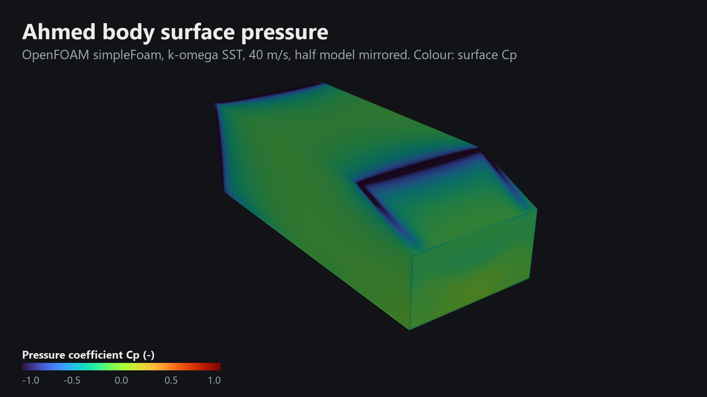
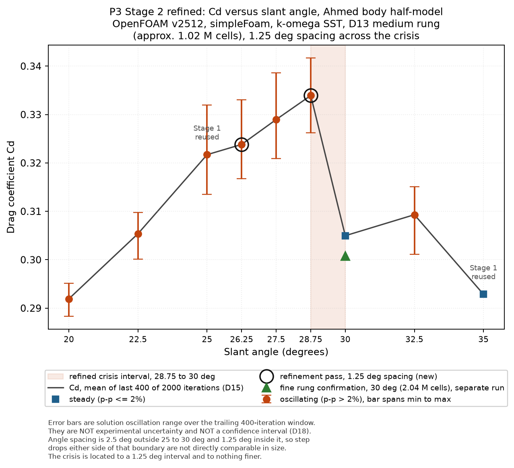
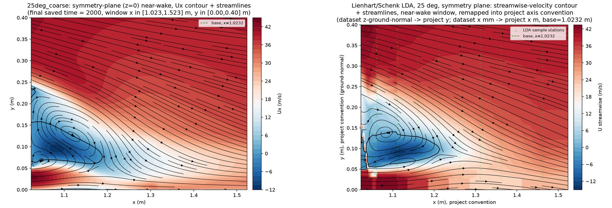
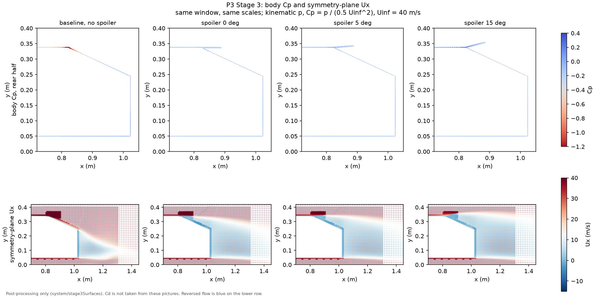
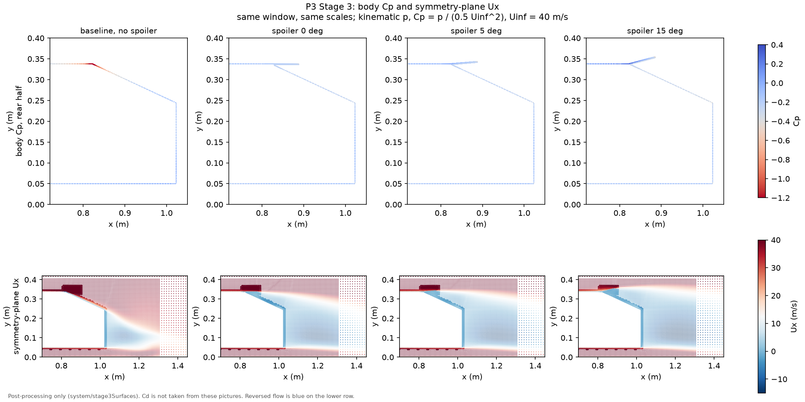
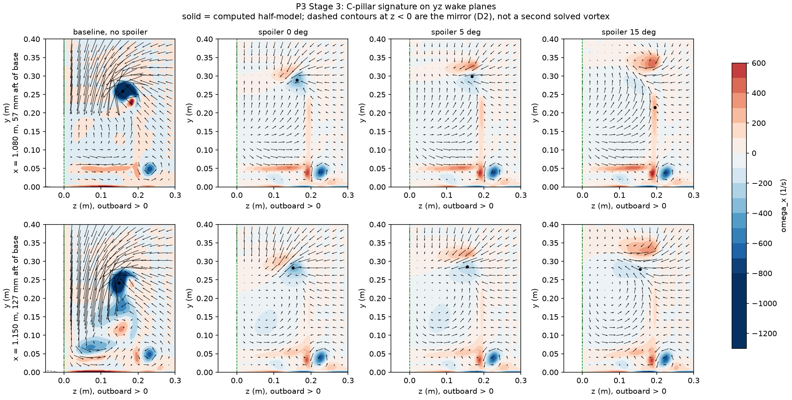

Ahmed Body External Aerodynamics
- Solver
- OpenFOAM v2512, simpleFoam, k-omega SST
- Validated against
- Ahmed et al. wind-tunnel drag data
- Headline
- 28.75-30°drag crisis, experiment near 30°
- Also
- Roof spoiler cuts drag 8.4%

Problem
A car spends most of its highway fuel pushing air out of the way, and roughly 85 percent of a simplified car's drag comes from the low-pressure wake behind it rather than from the air hitting the front. The Ahmed body, a simplified car-like block with an adjustable rear slant angle, is the standard benchmark for isolating that question: what does the shape of the back do to drag. It is also known for a counter-intuitive result, the drag crisis, where drag rises steadily as the slant steepens and then suddenly falls near 30 degrees, because the flow over the slant detaches completely instead of following it. This study set out to answer three questions in order: can an open-source toolchain reproduce a published drag measurement, does it put the drag crisis where the experiment puts it, and can the validated setup then be used to solve an actual design problem, adding a roof spoiler to a high-drag configuration.
Method
simpleFoam (steady RANS, k−ω SST with wall functions) was run on mesh ladders at 25 and 35 degree slant angles first, each with a tolerance band against the published experimental drag written down before any solve ran. With validation passed, a refined angle sweep at 1.25 degree spacing located the drag crisis. A third stage then added a 2.0 mm roof trailing-edge spoiler at three pitch angles to the pre-crisis 25 degree body and compared drag against a method-identical baseline, with an independent second signature, the collapse of solver-residual oscillation, checked against the same crisis location.
Validation
On the finest mesh, Cd = 0.3179 at 25 degrees and Cd = 0.2904 at 35 degrees, both inside their pre-declared bands (0.287 to 0.347 and 0.267 to 0.327), and both mesh ladders converged. The 35 degree case initially failed the first band drawn, which was investigated and the band re-anchored on documented grounds rather than adjusted to fit the answer, and that full account is kept in the project record rather than smoothed over. The refined sweep located the drag crisis to a 1.25 degree interval, 28.75 to 30 degrees, against an experimental value of approximately 30 degrees, corroborated by an independent signature: the solution's iteration-to-iteration oscillation collapses from 4.63 percent to 0.68 percent peak-to-peak across exactly the same interval.
Headline results
| Case | Cd | Δ vs baseline |
|---|---|---|
| Baseline, no spoiler | 0.3212 | - |
| Spoiler, 0° pitch | 0.2942 | −8.42% |
| Spoiler, 5° pitch | 0.3036 | −5.48% |
| Spoiler, 15° pitch | 0.3518 | +9.51% |
Every spoiler case, including the pitch that raised drag, collapsed the baseline's 6.56 percent solution oscillation down to about 0.65 percent, which is the pre-declared signature of a regime change. The honest headline is therefore not "a spoiler saves 8 percent" but that this spoiler trips a pre-crisis body into the post-crisis separated regime at every pitch tested, and pitch then sets the drag of that separated configuration. Framed as fuel, the best case (0 degree pitch) is worth about 0.825 MJ per 100 km on the Ahmed body's own frontal area, an aerodynamic-term-only figure with no drive cycle applied.
In motion





Figures


Limitations
- Steady RANS (k−ω SST) captures the mean drag crisis location well but does not resolve unsteady wake dynamics; the oscillation metric used here is solver iteration variance, not a physical unsteadiness measurement.
- The 35 degree validation band was re-anchored mid-study on documented grounds; the original band is kept on record rather than removed.
- The spoiler study used one geometry family (2.0 mm roof trailing-edge strip) at one slant angle (25 degrees); no claim is made about spoilers on other slant angles or other body classes.
- Fuel figures are an aerodynamic-drag-term-only estimate on the Ahmed body's own frontal area; no drive cycle or percent-of-total-fuel claim is made.